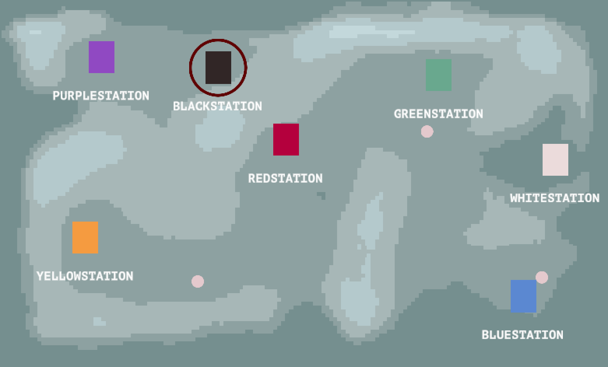

DEVLOG
in the past week, ive been working on a Unity Editor tool / shader that creates a topographical image of a Unity terrain.

So basically i have this small prototype of a game where a player drives a bus around a terrain in Unity. Another portion of the game has the player looking at a map of the world to plot their bus route for the day,
and i was starting to get frustrated with having to reorganize the map everytime i moved something in the Unity scene.
so i decided to create an editor tool that would allow me to scan in the contents of the world and create a map from it.
This was nice and all, but what i REALLY wanted was a topographical map of the terrain i had built. I want a big part of the game to revolve around the verticality of the map, so i thought that this would be a pretty necessary feature of a map.
i started off with a pretty small sample of height points. My editor tool picks an interval, divides the terrain by that interval along the x and z (z in a top-down view in Unity corresponds to the y in a 2d space in this case), and then samples the height at the point. Unity terrains actually have a really convenient SampleHeight(Vec3) operation that made this part of the calculation really easy. What i ended up with was a list of about 1,000 height points saved to text file. From there, i read in the data on the map screen and used pixel-coloring shader with 5 sample colors to create this pretty low-res height map:
From here, I made the number of intervals even greater to sample more height points. i think right now, my map scanner is reading in somewhere around 15,000 height points, which has led to a much cleaner image:
im feeling good about how its turned out. there are a few more improvements i want to make, and would like to make the code for it a bit more generic so i can use it in future projects as well. i havent decided if i like the pixel effect, or if i want to use even more height points to increase the definition. i think ill leave it like this for now and keep working on the actual gameplay.
- - - - -
Hello world! It has been a while since I’ve been actively updating a devlog with posts about current projects, and I wanted to start again. The latest devlog I ran was for my game, Red Planet Farming. That devlog is here. Since the release of the game, I’ve been working on other projects, so I haven’t been posting to that devlog, but I wanted to create a new one where I could post a ton of random stuff. That way I can keep the RPF one separate and focused, whereas this will be more of a general/personal blog about my side projects.
I put this image here as a test when I was writing the CSS/HTML but I think it looks nice so I'm just going to leave it...LOL!